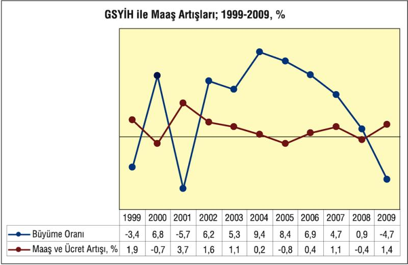
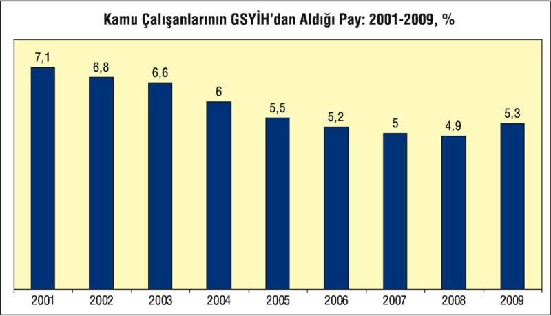

1980 sonrasının "devleti küçültme" hedefli neoliberal politikalar, son 30 yılda kamuda istihdam edilen işçi ve memur sayısında önemli düşüşlerle sonuçlandı. Kamuda (KİT'ler ve belediyeler ile birlikte) çalışan sayısı 3 milyonun altında. Bunların yüzde 15'i işçi, yüzde 85'i ise "kadrolu personel-sözleşmeli personel vb" statüsünde. Kamu istihdamının yüzde 8,5'u KİT'lerde, yüzde 11,5'u belediyelerde. Dolayısıyla, "merkez"de çalışan yüzde 80-85 kamu çalışanı, grev, toplu sözleşme hakkını kullanamıyor.
Bunun sonucudur ki, kamu çalışanlarının ulusal gelirden aldıkları pay, son yılların çoğunda, büyüme sürecine karşın artmadı, azaldı.
Türkiye ekonomisi, özellikle 2001 krizi sonrası, AKP'nin de iktidarına denk düşen 2002-2008 döneminde yıllık yüzde 6'yı aşkın büyüdü. Dünyadaki likidite bolluğunun yarattığı "lale devri" irili ufaklı sermayeye birikim imkanı sunarken, çalışanlar, bu dönemden pay alamadı. Harcamalara göre GSYİH verileri büyüme eğrisiyle, devletin cari harcamaları içinde yer alan "maaş ve ücretler" eğrisinin çok farklı olduğunu gösteriyor. 2002-2008 döneminde milli gelir pastası ortalama yıllık yüzde 6,2 büyürken, kamu çalışanlarının gelirleri ancak yıllık yüzde 1 arttı. Dolayısıyla "büyüme"yi, kamu çalışanları hissedemedi, durumları değişmedi, hatta geriledi.

Kriz yılı 2009'da ise ulusal gelir yüzde 4,7 daralırken maaş ve ücretlerdeki reel artış yüzde 1,4 olarak gerçekleşti ve kamu çalışanları ilk kez küçülen gelir pastasından etkilenmediler.
2009'da görece iyileşmeye karşın 2000'li yılların tamamına hakim olan eğilim, kamu emekçilerinin yoksullaşmasıdır. 2001-2007 döneminin grafiğine, özellikle IMF ile AKP iktidarının icra ettiği politikaların omurgasını oluşturan "mali disiplin" prensibi damgasını vurdu. IMF'nin, "faiz dışı fazla" hedeflerini gerçekleştirmeye çalışan iktidar, kamu harcamalarını kısarken maaşları da reel anlamda düşürdü . TÜİK'in büyüme verileri şunu gösteriyor: IMF ile geçen 1998-2008 döneminin başlarında yüzde 7 dolayında olan kamu emekçilerinin ulusal gelir içindeki "maaş ve ücretlerinin" payı, özellikle AKP iktidarı döneminde hızla geri çekildi ve 2008'de yüzde 4,9'a kadar geriledi. 2009'da ise, 2008'deki düzeye dönülerek maaş ve ücret payı yüzde 5,3 olarak gerçekleşti.

Büyük fotoğrafa bakıldığında, görülüyor ki, 3 milyona yaklaşan kamu çalışanı, son 10 yılda büyümüş görünen ulusal gelirden pay alamamış, tersine başlarda, bu pastada yüzde 7 dolayında olan payları, dönem sonunda 2 puan geriletilerek yüzde 5 dolayına çekilmiştir. Yoksullaşma, ağırlıkla AKP iktidarında yaşanmıştır.